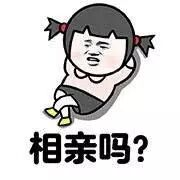
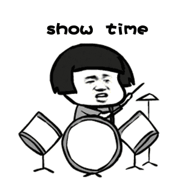
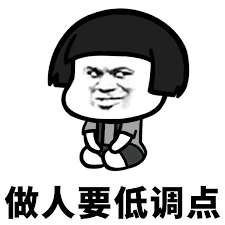

最近在听得到上梁宁的《产品思维30讲》，真的受益良多，大为折服。有不少事情我一直懵懵懂懂，一直到听了她的课程，才被突然点醒。此文主要谈谈我对于她的理论的理解。
相亲中一个小问题
先问一个小问题：
相亲的时候，要不要在相亲对象面前尽量表现自己的优点和长处？

我自己下意识的思路会是这样的：
我如果去相亲，应该会尽量低调地表现自己的优点和长处。之所以要尽量表现优点和长处，是希望相亲对象对我感兴趣。之所以要尽量低调，也是不要给相亲对象留下浮夸的印象，本质上还是希望相亲对象对我感兴趣。

而梁宁有一个专业的结婚教练朋友，那个朋友给出的答案是：
不要努力表现自己，不要谈自己的最擅长的东西，不要努力营造气氛，平淡如水即可。
为什么呢？
注意，在这里我们的场景是相亲而不是一夜情，所以追求的是长期关系。既然是长期关系，那就不能基于自己最闪耀的点去缔结关系。因为一个人最闪耀的点，往往都会有失效的时候。
如果对方是因为你的这个闪耀的点才喜欢的你，那你是不是为了保持对方对你的兴趣，要不停地闪耀呢？
长期关系中，没有人能做得到不停地闪耀。相反，你平平常常拿出来的样子，才是你可以稳定提供的样子。从这个稳定的点开始，作为长期关系的发端，才有可能发展出一段靠谱的长期关系。
要是一段关系是你卯足了劲跳起来才能够得到的，其实很难持久。
如何找到想要的人
看完上面这段分析，你是不是会觉得完全没有用，一点也不贴近现实？
现实中的真实情况是，看上我的人我看不上，而我看上的人看不上我，这是无数人的痛苦。
难道按照这个逻辑，真的要去选择那些我看不上的人吗？
其实有这样痛苦的人，都犯了同一个错误：
过于执着于“点”，即这个作为个体的人，而忽略了“线”，“面”，“体”。
任何一个人，都有他的来路，都有使他成为今天这个“点”的“线”， “面”， “体”。
如果你在相亲的时候，完全对线面体无感，而只想拥有一个“点”的当下，那基本上是守株待兔。
比如说你想嫁一个有房有车的人，看上去好像不容易。但是要是你找一个在BAT上班的码农，稳定工作几年以后，就会有房有车。你要注意到这背后的线，而不要纠结于当下的点。
类似的，如果你想嫁一个会照顾人的男人，看上去好像这样的男人很少。但是要是找一个很愿意照顾人的男人，相处几年以后，慢慢这个男人就会培养出会照顾人的能力了。
即使是外貌这样的点，其实也是可以找到背后的线的。一个人的外貌，除去天生的五官之外，还有很大一部分取决于身材，护肤，衣着以及自信心。而这些往往随着一个人的经济地位的提升都会相应地提升。
看看马斯克早年创业初的照片以及现在的照片，你会发现他随着年岁的增长反而外貌变得更好了。
不过于执着于“点”，而看到“点”背后的“线”，“面”， “体”。看看那些你喜欢的特质都是从哪里发展出来的，然后预先找到看得上你的，并且有相应潜力的人，加以培养，其实反而是一条捷径。
顺势而为
这里的势，其实就是“点”背后的“线”， “面”， “体”的大势。
找伴侣，找工作，甚至创业，都要看到时代带来的大势。
一个点的力量其实是很有限的。
然而当这个点站在“线”， “面”， “体”发展的关键位置的时候，它就可以享受大势带来的红利，这才是远远比单个的“点”能带来的利益大得多的利益。
当下一个人能拥有的点，其实就是你能得到的最好的点。而找到有势能的点，或者把一个点带到有势能的地方，则是我们自己的责任。
（最后附上梁宁所提到的结婚教练的公众号：彬彬有礼，里面还有蛮多别的有意思的内容的，比如为什么有的女生老是碰到渣男，点击“阅读原文”可以转到她的一篇被广泛转载的文章）